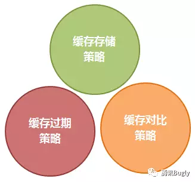
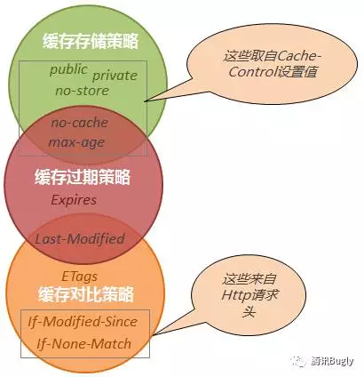
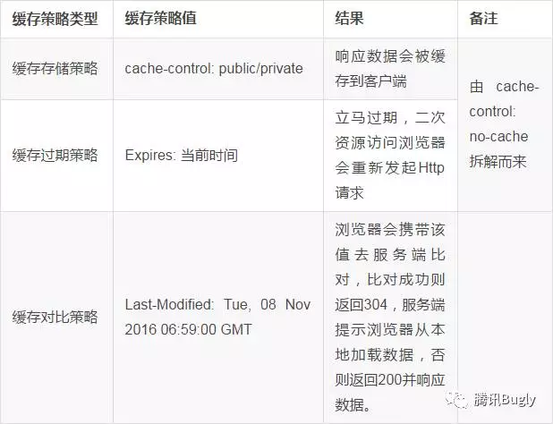
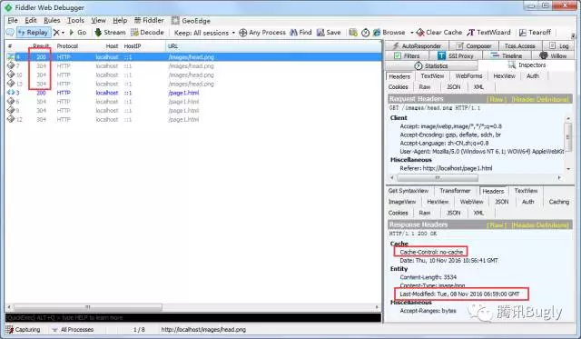
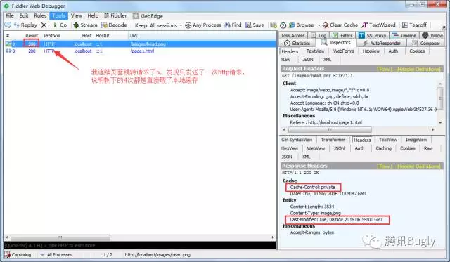
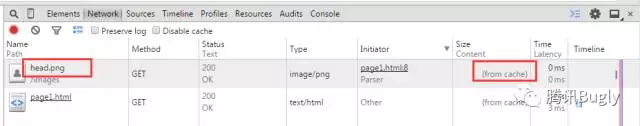
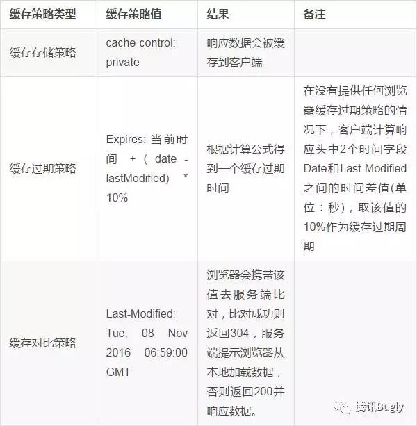

HTTP强缓存和协商缓存
浏览器缓存有下面的优点：
- 减少冗余的数据传输
- 减少服务器负担
- 加快客户端加载网页的速度
在浏览器第一次发起请求时，本地无缓存，向web服务器发送请求，服务器起端响应请求，浏览器端缓存。过程如下：
在第一次请求时，服务器会将页面最后修改时间通过Last-Modified标识由服务器发送给客户端，客户端记录修改时间；服务器还会生成一个Etag，并发送给客户端。
浏览器后续再次进行请求时：

浏览器缓存主要分为强强缓存（也称本地缓存）和协商缓存（也称弱缓存）。根据上图，浏览器在第一次请求发生后，再次发送请求时：
浏览器请求某一资源时，会先获取该资源缓存的header信息，然后根据header中的Cache-Control和Expires来判断是否过期。若没过期则直接从缓存中获取资源信息，包括缓存的header的信息，所以此次请求不会与服务器进行通信。这里判断是否过期，则是强缓存相关。后面会讲Cache-Control和Expires相关。
如果显示已过期，浏览器会向服务器端发送请求，这个请求会携带第一次请求返回的有关缓存的header字段信息，比如客户端会通过If-None-Match头将先前服务器端发送过来的Etag发送给服务器，服务会对比这个客户端发过来的Etag是否与服务器的相同，若相同，就将If-None-Match的值设为false，返回状态304，客户端继续使用本地缓存，不解析服务器端发回来的数据，若不相同就将If-None-Match的值设为true，返回状态为200，客户端重新机械服务器端返回的数据；客户端还会通过If-Modified-Since头将先前服务器端发过来的最后修改时间戳发送给服务器，服务器端通过这个时间戳判断客户端的页面是否是最新的，如果不是最新的，则返回最新的内容，如果是最新的，则返回304，客户端继续使用本地缓存。
强缓存
强缓存是利用http头中的Expires和Cache-Control两个字段来控制的，用来表示资源的缓存时间。强缓存中，普通刷新会忽略它，但不会清除它，需要强制刷新。浏览器强制刷新，请求会带上Cache-Control:no-cache和Pragma:no-cache
Expires
Expires是http1.0的规范，它的值是一个绝对时间的GMT格式的时间字符串。如我现在这个网页的Expires值是：expires:Fri, 14 Apr 2017 10:47:02 GMT。这个时间代表这这个资源的失效时间，只要发送请求时间是在Expires之前，那么本地缓存始终有效，则在缓存中读取数据。所以这种方式有一个明显的缺点，由于失效的时间是一个绝对时间，所以当服务器与客户端时间偏差较大时，就会导致缓存混乱。如果同时出现Cache-Control:max-age和Expires，那么max-age优先级更高。如我主页的response headers部分如下：
cache-control:max-age=691200
expires:Fri, 14 Apr 2017 10:47:02 GMT
那么表示资源可以被缓存的最长时间为691200秒，会优先考虑max-age。
Cache-Control
Cache-Control是在http1.1中出现的，主要是利用该字段的max-age值来进行判断，它是一个相对时间，例如Cache-Control:max-age=3600，代表着资源的有效期是3600秒。cache-control除了该字段外，还有下面几个比较常用的设置值：
no-cache：不使用本地缓存。需要使用缓存协商，先与服务器确认返回的响应是否被更改，如果之前的响应中存在ETag，那么请求的时候会与服务端验证，如果资源未被更改，则可以避免重新下载。
no-store：直接禁止游览器缓存数据，每次用户请求该资源，都会向服务器发送一个请求，每次都会下载完整的资源。
public：可以被所有的用户缓存，包括终端用户和CDN等中间代理服务器。
private：只能被终端用户的浏览器缓存，不允许CDN等中继缓存服务器对其缓存。
Cache-Control与Expires可以在服务端配置同时启用，同时启用的时候Cache-Control优先级高。
协商缓存
协商缓存就是由服务器来确定缓存资源是否可用，所以客户端与服务器端要通过某种标识来进行通信，从而让服务器判断请求资源是否可以缓存访问。
普通刷新会启用弱缓存，忽略强缓存。只有在地址栏或收藏夹输入网址、通过链接引用资源等情况下，浏览器才会启用强缓存，这也是为什么有时候我们更新一张图片、一个js文件，页面内容依然是旧的，但是直接浏览器访问那个图片或文件，看到的内容却是新的。
这个主要涉及到两组header字段：Etag和If-None-Match、Last-Modified和If-Modified-Since。上面以及说得很清楚这两组怎么使用啦~复习一下：
Etag和If-None-Match
Etag/If-None-Match返回的是一个校验码。ETag可以保证每一个资源是唯一的，资源变化都会导致ETag变化。服务器根据浏览器上送的If-None-Match值来判断是否命中缓存。
与Last-Modified不一样的是，当服务器返回304 Not Modified的响应时，由于ETag重新生成过，response header中还会把这个ETag返回，即使这个ETag跟之前的没有变化。
Last-Modify/If-Modify-Since
浏览器第一次请求一个资源的时候，服务器返回的header中会加上Last-Modify，Last-modify是一个时间标识该资源的最后修改时间，例如Last-Modify: Thu,31 Dec 2037 23:59:59 GMT。
当浏览器再次请求该资源时，request的请求头中会包含If-Modify-Since，该值为缓存之前返回的Last-Modify。服务器收到If-Modify-Since后，根据资源的最后修改时间判断是否命中缓存。
如果命中缓存，则返回304，并且不会返回资源内容，并且不会返回Last-Modify。
为什么要有Etag
你可能会觉得使用Last-Modified已经足以让浏览器知道本地的缓存副本是否足够新，为什么还需要Etag呢？HTTP1.1中Etag的出现主要是为了解决几个Last-Modified比较难解决的问题：
一些文件也许会周期性的更改，但是他的内容并不改变(仅仅改变的修改时间)，这个时候我们并不希望客户端认为这个文件被修改了，而重新GET；
某些文件修改非常频繁，比如在秒以下的时间内进行修改，(比方说1s内修改了N次)，If-Modified-Since能检查到的粒度是s级的，这种修改无法判断(或者说UNIX记录MTIME只能精确到秒)；
某些服务器不能精确的得到文件的最后修改时间。
Last-Modified与ETag是可以一起使用的，服务器会优先验证ETag，一致的情况下，才会继续比对Last-Modified，最后才决定是否返回304。
HTTP基于缓存策略三要素分解法
两道题
以下为 page.html 内容：1
2
3
4
5<!DOCTYPE html><html xmlns="http://www.w3.org/1999/xhtml"><head>
<meta http-equiv="Content-Type" content="text/html; charset=utf-8" />
<title>page页</title></head><body>
<img src="images/head.png" />
<a href="page.html">重新访问page页</a></body></html>
首次访问该页面，页面中 head.png 响应头信息如下：1
2
3
4
5
6
7HTTP/1.1 200 OK
Cache-Control: no-cache
Content-Type: image/png
Last-Modified: Tue, 08 Nov 2016 06:59:00 GMT
Accept-Ranges: bytes
Date: Thu, 10 Nov 2016 02:48:50 GMT
Content-Length: 3534
问题1：请问当点击“重新访问 page 页”链接重新加载该页面后， head.png 如何二次加载？
问题2：如果将上述信息中的 Cache-Control 设置为 private，那么结果又会如何呢？
HTTP缓存体系
首先我将 Http 缓存体系分为以下三个部分：

缓存存储策略
用来确定 Http响应内容是否可以被客户端缓存，以及可以被哪些客户端缓存这个策略的作用只有一个，用于决定 Http 响应内容是否可缓存到客户端
- 对于 Cache-Control 头里的 Public、Private、no-cache、max-age 、no-store 他们都是用来指明响应内容是否可以被客户端存储的，其中前4个都会缓存文件数据（关于 no-cache 应理解为“不建议使用本地缓存”，其仍然会缓存数据到本地），后者 no-store 则不会在客户端缓存任何响应数据。另关于 no-cache 和 max-age 有点特别，我认为它是一种混合体，下面我会讲到。
- 通过 Cache-Control：Public 设置我们可以将 Http 响应数据存储到本地，但此时并不意味着后续浏览器会直接从缓存中读取数据并使用，为啥？因为它无法确定本地缓存的数据是否可用（可能已经失效），还必须借助一套鉴别机制来确认才行， 这就是我们下面要讲到的“缓存过期策略”。
缓存过期策略
客户端用来确认存储在本地的缓存数据是否已过期，进而决定是否要发请求到服务端获取数据
刚上面我们已经阐述了数据缓存到了本地后还需要经过判断才能使用，那么浏览器通过什么条件来判断呢？ 答案是：Expires，Expires 指名了缓存数据有效的绝对时间，告诉客户端到了这个时间点（比照客户端时间点）后本地缓存就作废了，在这个时间点内客户端可以认为缓存数据有效，可直接从缓存中加载展示。
不过 Http 缓存头设计并没有想象的那么规矩，像上面提到的 Cache-Control（这个头是在Http1.1里加进来的）头里的 no-cache 和 max-age 就是特例，它们既包含缓存存储策略也包含缓存过期策略，以 max-age 为例，他实际上相当于：
Cache-Control：public/private（这里不太确定具体哪个）
Expires：当前客户端时间 + maxAge 。
而 Cache-Control：no-cache 和 Cache-Control：max-age=0 （单位是秒）相当
这里需要注意的是：
Cache-Control 中指定的缓存过期策略优先级高于Expires，当它们同时存在的时候，后者会被覆盖掉。
缓存数据标记为已过期只是告诉客户端不能再直接从本地读取缓存了，需要再发一次请求到服务器去确认，并不等同于本地缓存数据从此就没用了，有些情况下即使过期了还是会被再次用到，具体下面会讲到。
缓存对比策略
将缓存在客户端的数据标识发往服务端，服务端通过标识来判断客户端 缓存数据是否仍有效，进而决定是否要重发数据。
客户端检测到数据过期或浏览器刷新后，往往会重新发起一个 http 请求到服务器，服务器此时并不急于返回数据，而是看请求头有没有带标识（ If-Modified-Since、If-None-Match）过来，如果判断标识仍然有效，则返回304告诉客户端取本地缓存数据来用即可（这里要注意的是你必须要在首次响应时输出相应的头信息（Last-Modified、ETags）到客户端）。至此我们就明白了上面所说的本地缓存数据即使被认为过期，并不等于数据从此就没用了的道理了。
关于 Last-Modified，这个响应头使用要注意，可能会影响到缓存过期策略，具体原因，后面我会通过解答开篇提到的2道题来作说明。
以上就是我所认识的缓存策略，下面我将缓存策略三要素和常用的几个缓存头（项）结合一起，让大家更清晰的认识到它们之间的关系：

通过上图我可以清晰的看到各缓存项分别属于哪个缓存策略范畴，这其中有部分重叠，它表明这些缓存项具有多重缓存策略，所以实际在分析缓存头的时候，除了常规的头外，我们还需要将这些具有双重缓存策略的项分解开来。
最后我们回到最开始提到的2道题目，我们来一起分解下：
第一道题：1
2
3
4
5
6
7HTTP/1.1 200 OK
Cache-Control: no-cache
Content-Type: image/png
Last-Modified: Tue, 08 Nov 2016 06:59:00 GMT
Accept-Ranges: bytes
Date: Thu, 10 Nov 2016 02:48:50 GMT
Content-Length: 3534
分析上述 Http 响应头发现有以下两项与缓存相关：1
2Cache-Control: no-cache
Last-Modified: Tue, 08 Nov 2016 06:59:00 GMT
我们上面讲到了 Cache-Control: no-cache 相当于 Cache-Control: max-age=0，且他们都是多重策略头，我们需将其分解：
Cache-Control: no-cache 等于 Cache-Control: max-age=0，
接着 Cache-Control: max-age=0 又可分解成：
Cache-Control: public/private （不确定是二者中的哪一个）
Expires: 当前时间
最终我们得到了以下完整的缓存策略三要素：

所以最终结果是：浏览器会再次请求服务端，并携带上 Last-Modified 指定的时间去服务器对比：
a）对比失败：服务器返回200并重发数据，客户端接收到数据后展示，并刷新本地缓存。
b）对比成功：服务器返回304且不重发数据，客户端收到304状态码后从本地读取缓存数据。以下为模拟此种情况下请求后的抓包情况：

这道题本身不难，但若认为 no-cache 不会缓存数据到本地，那么你理解起来就会很矛盾，因为如果文件数据没有被本地缓存，服务器返回304后将会无法展示出图片内容，但实际上它是能正常展示的。这道题很好的证明了 no-cache 也会缓存数据到本地这一说法。
第二道题：1
2
3
4
5
6
7HTTP/1.1 200 OK
Cache-Control: private
Content-Type: image/png
Last-Modified: Tue, 08 Nov 2016 06:59:00 GMT
Accept-Ranges: bytes
Date: Thu, 10 Nov 2016 02:48:50 GMT
Content-Length: 3534
解题思路和上题一样，首先先找到缓存相关项：1
2
3Cache-Control: private
Last-Modified: Tue, 08 Nov 2016 06:59:00 GMT
这时我们会发现根本找不到缓存过期策略项，那答案会不会和上面一样？ 一时半会也分析不出答案，那只能实际测试下了：

再看看 Chrome 浏览器下抓包：

可以看到，浏览器后续请求都直接取的本地缓存，看来的确存在某种缓存过期策略（根据我上面的缓存过期策略理论，浏览器如果直接从本地加载缓存数据，说明它相信本地缓存数据有效，那一定存在某种缓存过期判断条件）。这个问题百思不得其解，困扰了我好久，直到一次偶然的机会我在 Fiddler 响应信息面板里的 Caching 选项卡中找到了答案：
原来，在没有提供任何浏览器缓存过期策略的情况下，浏览器遵循一个启发式缓存过期策略：
根据响应头中2个时间字段 Date 和 Last-Modified 之间的时间差值，取其值的10%作为缓存时间周期。
贴一下Caching面板里的描述，英语好的同学可以精准翻译下：
最终我们得到了以下完整的缓存策略三要素：

最终结果
浏览器会根据 Date 和 Last-Modified 之间的时间差值缓存一段时间，这段时间内会直接使用本地缓存数据而不会再去请求服务器（强制请求除外），缓存过期后，会再次请求服务端，并携带上 Last-Modified 指定的时间去服务器对比并根据服务端的响应状态决定是否要从本地加载缓存数据。
总结
Http 缓存设置起来并不复杂，但却容易被轻视， 今天这篇文章结合2道题目，通过分析、解剖相关缓存头，从系统化角度对 Http 缓存机制做了一个较完整的剖析：Http 缓存机制实际上是 Http 缓存策略三个要素（纬度）相互作用的集合，所以在分析和设置 Http 报文缓存头时，只要能从中精准的分解出缓存三要素，我们就能非常准确的预判到缓存设置最终能达到的效果。
浏览器缓存详解:expires,cache-control,last-modified,etag详细说明

Last-Modified
在浏览器第一次请求某一个URL时，服务器端的返回状态会是200，内容是你请求的资源，同时有一个Last-Modified的属性标记(HttpReponse Header)此文件在服务期端最后被修改的时间，格式类似这样：
Last-Modified:Tue, 24 Feb 2009 08:01:04 GMT
客户端第二次请求此URL时，根据HTTP协议的规定，浏览器会向服务器传送If-Modified-Since报头(HttpRequest Header)，询问该时间之后文件是否有被修改过：
If-Modified-Since:Tue, 24 Feb 2009 08:01:04 GMT
如果服务器端的资源没有变化，则自动返回HTTP304（NotChanged.）状态码，内容为空，这样就节省了传输数据量。当服务器端代码发生改变或者重启服务器时，则重新发出资源，返回和第一次请求时类似。从而保证不向客户端重复发出资源，也保证当服务器有变化时，客户端能够得到最新的资源。
注：如果If-Modified-Since的时间比服务器当前时间(当前的请求时间request_time)还晚，会认为是个非法请求
Etag工作原理
HTTP协议规格说明定义ETag为“被请求变量的实体标记”（参见14.19）。简单点即服务器响应时给请求URL标记，并在HTTP响应头中将其传送到客户端，类似服务器端返回的格式：
Etag:“5d8c72a5edda8d6a:3239″
客户端的查询更新格式是这样的：
If-None-Match:“5d8c72a5edda8d6a:3239″
如果ETag没改变，则返回状态304。
即:在客户端发出请求后，HttpReponse Header中包含Etag:“5d8c72a5edda8d6a:3239″
标识，等于告诉Client端，你拿到的这个的资源有表示ID：5d8c72a5edda8d6a:3239。当下次需要发Request索要同一个URI的时候，浏览器同时发出一个If-None-Match报头(Http RequestHeader)此时包头中信息包含上次访问得到的Etag:“5d8c72a5edda8d6a:3239″标识。
If-None-Match:“5d8c72a5edda8d6a:3239“
,这样，Client端等于Cache了两份，服务器端就会比对2者的etag。如果If-None-Match为False，不返回200，返回304(Not Modified) Response。
Expires
给出的日期/时间后，被响应认为是过时。如Expires:Thu, 02 Apr 2009 05:14:08 GMT
需和Last-Modified结合使用。用于控制请求文件的有效时间，当请求数据在有效期内时客户端浏览器从缓存请求数据而不是服务器端.当缓存中数据失效或过期，才决定从服务器更新数据。
Last-Modified和Expires
Last-Modified标识能够节省一点带宽，但是还是逃不掉发一个HTTP请求出去，而且要和Expires一起用。而Expires标识却使得浏览器干脆连HTTP请求都不用发，比如当用户F5或者点击Refresh按钮的时候就算对于有Expires的URI，一样也会发一个HTTP请求出去，所以，Last-Modified还是要用的，而且要和Expires一起用。
Etag和Expires
如果服务器端同时设置了Etag和Expires时，Etag原理同样，即与Last-Modified/Etag对应的HttpRequestHeader:If-Modified-Since和If-None-Match。我们可以看到这两个Header的值和WebServer发出的Last-Modified,Etag值完全一样；在完全匹配If-Modified-Since和If-None-Match即检查完修改时间和Etag之后，服务器才能返回304.
Last-Modified和Etag
分布式系统里多台机器间文件的last-modified必须保持一致，以免负载均衡到不同机器导致比对失败
分布式系统尽量关闭掉Etag(每台机器生成的etag都会不一样)
Last-Modified和ETags请求的http报头一起使用，服务器首先产生Last-Modified/Etag标记，服务器可在稍后使用它来判断页面是否已经被修改，来决定文件是否继续缓存
过程如下:
1.客户端请求一个页面（A）。
2.服务器返回页面A，并在给A加上一个Last-Modified/ETag。
3.客户端展现该页面，并将页面连同Last-Modified/ETag一起缓存。
4.客户再次请求页面A，并将上次请求时服务器返回的Last-Modified/ETag一起传递给服务器。
5.服务器检查该Last-Modified或ETag，并判断出该页面自上次客户端请求之后还未被修改，直接返回响应304和一个空的响应体。
注：
1、Last-Modified和Etag头都是由WebServer发出的HttpReponse Header，WebServer应该同时支持这两种头。
2、WebServer发送完Last-Modified/Etag头给客户端后，客户端会缓存这些头；
3、客户端再次发起相同页面的请求时，将分别发送与Last-Modified/Etag对应的HttpRequestHeader:If-Modified-Since和If-None-Match。我们可以看到这两个Header的值和WebServer发出的Last-Modified,Etag值完全一样；
4、通过上述值到服务器端检查，判断文件是否继续缓存；
7、关于 Cache-Control: max-age=秒 和 Expires
Expires = 时间，HTTP 1.0 版本，缓存的载止时间，允许客户端在这个时间之前不去检查（发请求）
max-age = 秒，HTTP 1.1版本，资源在本地缓存多少秒。
如果max-age和Expires同时存在，则被Cache-Control的max-age覆盖。
Expires 的一个缺点就是，返回的到期时间是服务器端的时间，这样存在一个问题，如果客户端的时间与服务器的时间相差很大，那么误差就很大，所以在HTTP 1.1版开始，使用Cache-Control: max-age=秒替代。
Expires =max-age + “每次下载时的当前的request时间”
所以一旦重新下载的页面后，expires就重新计算一次，但last-modified不会变化
浏览器缓存总结
浏览器缓存分为强缓存和协商缓存。当客户端请求某个资源时，获取缓存的流程如下：
- 先根据这个资源的一些 http header 判断它是否命中强缓存，如果命中，则直接从本地获取缓存资源，不会发请求到服务器；
- 当强缓存没有命中时，客户端会发送请求到服务器，服务器通过另一些request header验证这个资源是否命中协商缓存，称为http再验证，如果命中，服务器将请求返回，但不返回资源，而是告诉客户端直接从缓存中获取，客户端收到返回后就会从缓存中获取资源；
- 强缓存和协商缓存共同之处在于，如果命中缓存，服务器都不会返回资源；
- 区别是，强缓存不对发送请求到服务器，但协商缓存会。
- 当协商缓存也没命中时，服务器就会将资源发送回客户端。
- 当 ctrl+f5 强制刷新网页时，直接从服务器加载，跳过强缓存和协商缓存；
当 f5 刷新网页时，跳过强缓存，但是会检查协商缓存；
强缓存
Expires（该字段是 http1.0 时的规范，值为一个绝对时间的 GMT 格式的时间字符串，代表缓存资源的过期时间）
Cache-Control:max-age（该字段是 http1.1 的规范，强缓存利用其 max-age 值来判断缓存资源的最大生命周期，它的值单位为秒）
协商缓存
Last-Modified（值为资源最后更新时间，随服务器response返回）
- If-Modified-Since（通过比较两个时间来判断资源在两次请求期间是否有过修改，如果没有修改，则命中协商缓存）
- ETag（表示资源内容的唯一标识，随服务器response返回）
- If-None-Match（服务器通过比较请求头部的If-None-Match与当前资源的ETag是否一致来判断资源是否在两次请求之间有过修改，如果没有修改，则命中协商缓存）